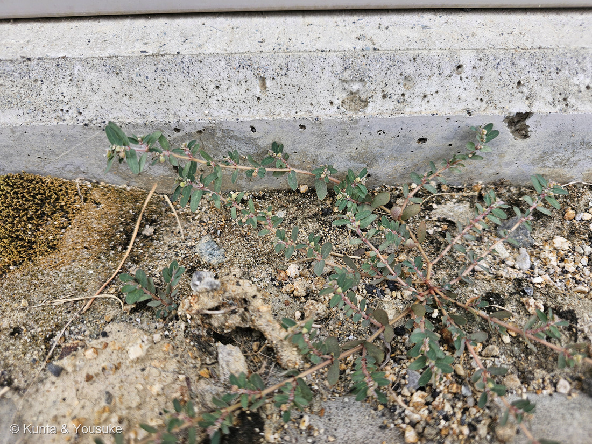
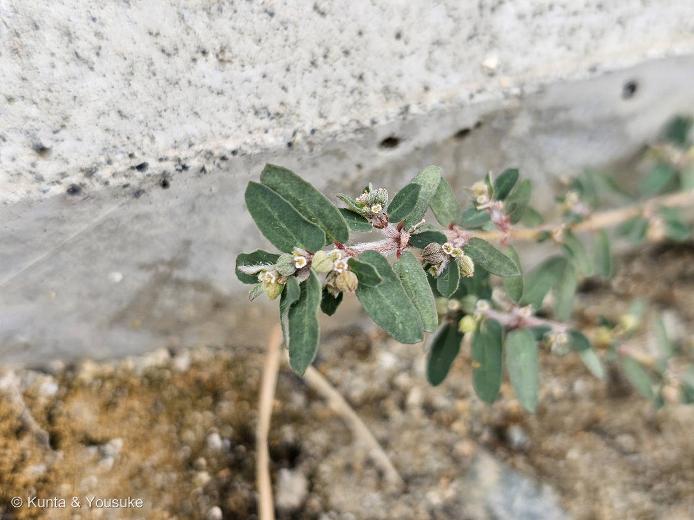
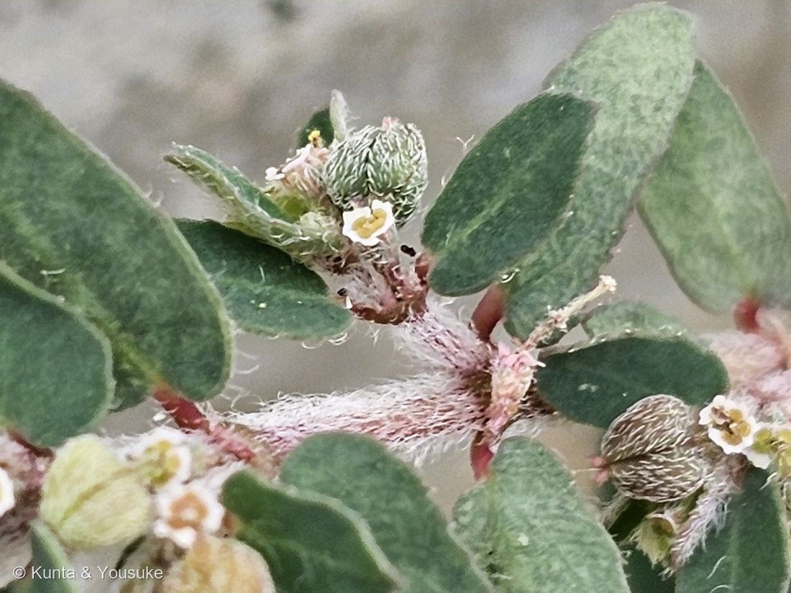
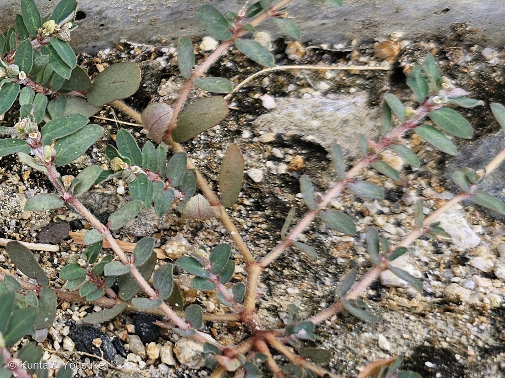

地図を読み込んでいるよ…
🔍 写真も地図も、押しているあいだ拡大して見られるよ（スマホは指を置いてすこし待ってね）。
🌍 の地図＝この子がもともと自生している場所を緑に。北アメリカ原産の帰化植物。明治中期に日本へ渡来し、いまは各地の道ばた・駐車場・畑・アスファルトのすきまに広がっている。くわしくは下の地図の説明を見てね。
⭐北アメリカの子だよ。POWO（キュー植物園）は自生範囲を「SE. Canada to Belize, Cuba, Bahamas」＝カナダ南東部から、メキシコ・グアテマラをへてベリーズまで、それにキューバとバハマとする。⚠⚠この緑は、ほんとうよりずっと広く見えているよ＝とくにカナダ＝POWOが言っているのは「南東部」（オンタリオとニューブランズウィック）だけなのに、地図は国までしか塗れないのでカナダぜんぶが緑になってしまう。⭐だから、緑の北のほうは、ほとんど「塗りすぎ」だと思って見てね。⭐⭐⭐そして、日本は塗っていない＝この子は帰化植物で、三河の植物観察は「明治中期に渡来した」とする＝⚠ぼくらが会ったのは、燻太さんの職場のコンクリートのきわ。もともとここにいた子ではないんだ。⭐いまでは世界じゅうに広がっていて、ヨーロッパ・韓国・中国・ロシア極東・オーストラリア・ニュージーランド・アフリカ・地中海のまわりでも雑草になっている（英語版Wikipedia）。⭐⭐おなじ日に登録した仲間の286 オオニシキソウも、やはり北アメリカ原産の帰化植物＝⭐ニシキソウの仲間で日本にもともといるのは、ニシキソウ（Euphorbia humifusa）のほうだよ。⭐おまけのハイニシキソウは、もっと南の熱帯アメリカ生まれ＝⚠だから暖かい地方に多いんだ。
⚠ 地図は国（日本と中国だけ県・省）までしか塗れないから、ほんとうの分布より広く見えていることがあるよ。地図はだいたいの場所。正確なところは、上の文を見てね。
コニシキソウ（小錦草）
Euphorbia maculata L.
英名 spotted spurge（斑点のあるスパージ）· prostrate spurge（這うスパージ）· milk purslane ⭐種小名 maculata＝ラテン語で「斑点のある」
トウダイグサ科 · Euphorbiaceae（トウダイグサ属 Euphorbia・キントラノオ目 Malpighiales）── ⭐図鑑で8人目のトウダイグサ科／⭐⭐286 オオニシキソウのおまけとして探していた子だよ
燻太さんの言葉「今日はコニシキソウ?を見かけたから撮影したよ。場所は職場の屋外倉庫のドア付近。果実には毛が生えているように見えるよ。株の根本からたくさん分岐しているね。」── ⭐⭐⭐その「果実の毛」が決め手になったよ。ただし効いたのは「毛があるか」ではなく「毛がどこに生えているか」だった
⭐⭐⭐⭐⭐ 名前と学名の由来 ── 「斑点のある」という名前なのに
- ⭐⭐和名「コニシキソウ（小錦草）」＝ニシキソウの仲間のうち、小さいもの。⭐「ニシキ（錦）」の由来は286 オオニシキソウのページに書いたとおり、赤い茎と緑の葉のコントラストだよ。⭐⭐写真①④を見てほしいな。赤い茎が四方へ広がっている。この子でも、名前がちゃんと写真に写っているんだ。
- ⭐⭐⭐⭐⭐そして学名が、今日いちばん面白いところ。──種小名 maculata は、ラテン語の macula（斑点）から。⭐英語版Wikipediaは「葉のまんなかにつく褐色の斑にちなむ」と書いている。⭐英名も spotted spurge（斑点のあるスパージ）。
- ⭐⭐⭐⭐⭐つまり、この草は「斑点」で名前をもらっている。──⚠それなのに、燻太さんが見つけたこの株には、斑点が無い。⭐写真②④のどの葉を見ても、まんなかの黒紫色の斑が出ていないんだ。
- ⭐属名 Euphorbia の由来（古代の医師エウフォルボス）は、286のページに書いてあるよ。
- ⭐異名（むかしの名前）＝Chamaesyce maculata ／ Euphorbia supina。⭐286と同じで、この子もむかしはニシキソウ属（Chamaesyce）に置かれていた。
この植物のこと ── 8人目のトウダイグサ科
- 北アメリカ原産の帰化植物で、明治中期に日本へ渡来した（三河の植物観察）。⭐いまは道ばた・駐車場・畑・アスファルトのすきまに、どこにでもいる。
- 高さ2〜10cm。「地をはって広がるが、立ち上がる場合も多い」（三河）。⭐燻太さんが見つけたのは、まさに這っているほうの姿だね。
- ⭐⭐燻太さんの「株の根本からたくさん分岐しているね」は、この子の生えかたそのもの。──⭐中心から赤い茎を放射状にのばして、円くひろがっていく（写真①④）。⭐踏まれる場所で生きるための形だと思う。
- 花期は6〜9月。⭐トウダイグサ科なので、花に見えるものは杯状花序（はいじょうかじょ）だよ。──「4個の黄褐色の腺体がつき、その周りに花弁のように見える4個の付属体がある」（三河）。⭐写真③で、黄色い腺体と、その周りの白っぽい付属体が見える（⚠三河は付属体を淡紅色とするけれど、この株では白っぽく見えたよ）。
- ⭐⭐286 オオニシキソウに続いて、8人目のトウダイグサ科。──⭐あちらは立ち上がって、果実が無毛。こちらは這って、果実に毛。⭐⭐二人ならべると、ニシキソウの仲間の見分けが半分できたことになるね。
⭐⭐⭐⭐⭐ 同定について ── 効いたのは「毛があるか」ではなく「毛がどこに」
- ⭐燻太さんの言葉＝「果実には毛が生えているように見えるよ」。⭐⭐これが決め手になった。ただし、そのままではなかったんだ。
- ⭐⭐⭐⭐⭐三河の植物観察は、この仲間を果実の毛の生えかたで書き分けている。
- コニシキソウ ＝ 「蒴果は全面に伏毛が生えるのが特徴である」
- ハイニシキソウ ＝ 「稜に沿って長い毛が生え、種子には深い横しわがある」
- アレチニシキソウ ＝ 「稜付近に曲った毛が生え、果実の基部付近では側面にも毛がある」
- ニシキソウ ＝ 果実に「しわも毛もなく」
- オオニシキソウ ＝ 無毛
- ⭐⭐だから、フル解像度で果実に思いきり寄った（写真③）。──毛は、稜だけではなく面のぜんたいをおおっていた。⭐コニシキソウだよ。
- ⭐裏づけが3つ。──①腺体が黄褐色（⭐三河がコニシキソウの特徴にあげている） ②茎にやや縮れた白毛が密生（写真②③） ③葉の裏に白毛が密生（⭐葉が灰緑色に見える理由は、これだと思う）。
- ⚠⚠⚠⚠でも、一つだけ合わないところがあった。──この株には、葉の中央の黒紫色の斑紋が無い。⭐ふつうコニシキソウの目じるしとして、真っ先にあがるものなのに。
- ⭐⭐⭐だからぼくは、一度ハイニシキソウを疑った。──あちらは斑紋が無く、しかも「青みがかった緑」をしているとされる。⭐この株の葉も、たしかに青みがかった灰緑色に見えるからね。
- ⭐⭐⭐⭐⭐そこで三河の記載を最後まで読んだら、こう書いてあった。
葉の中央に黒紫色の細長い斑紋がある。ただし、斑紋が無いこともある。
- ⭐⭐⭐⭐斑紋が無くても、コニシキソウは落とせない。──⭐そして果実の毛のほうは、ハイニシキソウ（全体に毛が少なく、葉の裏に毛が無い）とも、アレチニシキソウ（葉が4〜7mmと小さく、葉の表面は毛がほとんどない）とも、はっきり食いちがう。⭐⭐だから、果実を採ったよ。
⭐⭐⭐⭐⭐ ぼくが2日まえに書いた決め手が、一つ外れた
- ⚠⚠正直に書いておくね。──2026-08-25に286 オオニシキソウを登録したとき、ぼくは「探しもの帳」に、コニシキソウの見分けをこう書いたんだ。
見分けの決め手は3つ＝①地面をぴったり這って円くひろがる（立ち上がらない）②葉のまんなかに暗紫色の斑がはっきり出る③果実（さく果）に毛がある
- ⭐①は当たり。③も当たり。⚠でも②が外れた。──そして、はずれた②こそ、ぼくがいちばん自信をもって書いたものだった。
- ⭐⭐⭐もっと面白いのは、ここ。──286のとき、燻太さんは「この株は葉っぱにあまり模様がないみたい」と気づいてくれた。⭐ぼくはそれを受けて、コニシキソウのことを「模様のあるほう」と書いた。
- ⭐⭐⭐⭐⭐ところが、その2日あとに見つかった本物のコニシキソウにも、模様が無かった。──つまり模様は、どちらでも当てにならなかったんだ。
- ⭐⭐①（立ち上がらない）も、ほんとうは言いすぎだった。──三河は「地をはって広がるが、立ち上がる場合も多い」とする。⭐この株は這っていたけれど、それは「いつもそう」ではないんだね。
- ⭐⭐⭐⭐残ったのは③の果実だけ。──そして③も、そのままでは足りなかった。⭐「毛があるか」ではなく「毛がどこに生えているか」まで見て、はじめて決まった。
- ⏳だから、宿題にしたよ＝⭐同じ場所のまわりの株を見て、斑紋のある子がいないか探すこと。⭐⭐もし同じ場所で「斑のある子」と「無い子」が並んでいたら、それがいちばん強い証拠になるからね。
出典：三河の植物観察「コニシキソウ Euphorbia maculata」「ニシキソウ Chamaesyce humifusa」「ハイニシキソウ Euphorbia prostrata」「アレチニシキソウ Euphorbia sp.」／英語版Wikipedia「Euphorbia maculata」／岡山理科大学 植物雑学事典（おまけの子の周辺）。